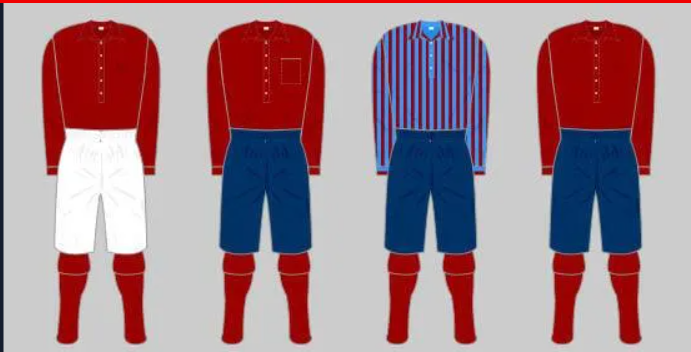

Origins
In late 1886, a group of workers from the Woolwich Arsenal Armament Factory formed a football team known as Dial Square. They played their first game in December 1886, winning 6-0, and later adopted the name Royal Arsenal. The team grew in popularity and success, securing various cup victories. They faced challenges when expelled from the London FA and boycotted by southern clubs due to their decision to turn professional. They changed their name to Woolwich Arsenal and moved between different grounds until settling at the Manor Ground, where they achieved promotion to Division One in 1903. However, with financial difficulties and relegation looming, the club moved to Highbury in 1913 and became known as Arsenal FC. After World War One, under new manager Herbert Chapman, Arsenal began to experience significant success and embarked on a transformative journey that would shape the future of the club.
New Beginnings
In the late 19th century, a small group of Scots led by David Danskin formed a football team at the Arsenal munitions factory in Woolwich. They played their first game in December 1886, under the name Dial Square, and secured a 6-0 victory. Inspired by two Nottingham Forest players, they received a set of red shirts and adopted the name Royal Arsenal. What started as a means of exercise and social activity soon became the foundation of a club that would go on to achieve great success and recognition, eventually evolving into Woolwich Arsenal.
The Reds
Arsenal's original kit in 1895 was a dark red with long sleeves, a collar, and three buttons down the front. This kit was brought by Nottingham Forest players who joined Dial Square FC. Their generosity in providing the red shirts inspired other teams to adopt similar colors, including Sparta Prague. In 1925, manager Herbert Chapman introduced a new strip with a red shirt, white collar, and sleeves, along with the club badge on the left-hand side. Over the years, the kit featured various sponsors and design changes, including the famous cannon graphic and the switch to red and white colors for the home kit at Emirates Stadium. Special kits were also worn to commemorate significant events, such as the redcurrant shirt in the final season at Highbury and the white shirt to celebrate Chapman's influence.
First Game
After turning professional and changing their name to Woolwich Arsenal in 1891, the club applied to join the Football League and was elected to the Second Division in 1893. They became London's only professional club and the first club south of Birmingham to be part of the League. Their first league game was against Newcastle United at the Manor Ground, ending in a 2-2 draw. The club experienced both victories and defeats in their debut season, finishing ninth out of 15 teams with 28 points. They achieved notable wins, including a 12-0 victory against Ashford United in the FA Cup, which remains their biggest win in the competition. The Manor Ground's steeply-banked terrace became known as Spion Kop, with the original Kop belonging to Woolwich Arsenal.
First Major Trophy
In 1930, three years after losing the FA Cup Final, Arsenal, under the guidance of Herbert Chapman, redeemed themselves and won their first major trophy. The final was against Huddersfield Town, the club Chapman had previously managed. Arsenal showcased Chapman's tactical innovations, employing a W-M formation. With seven minutes remaining, Jack Lambert scored a brilliant goal, running half the length of the field to secure Arsenal's victory. This win marked the beginning of Arsenal's transformation from a less successful club to one of the richest and most successful in the world. Chapman had promised to build a winning team within five years when he joined Arsenal in 1925, and he fulfilled his promise.
First League Title
In the 1930/31 season, Arsenal continued their success by winning their first league title in style. Led by Herbert Chapman, the team boasted a formidable attacking lineup of Jack Lambert, David Jack, and Cliff Bastin, who scored a remarkable number of goals. Arsenal scored a record-breaking 127 goals in the league that season, establishing themselves as a dominant force. They achieved impressive victories, including a 9-1 win over Grimsby Town and a 7-1 victory against Blackpool. This title triumph marked the first time a team from the south of Birmingham had won the league and set the stage for Arsenal's subsequent success, winning five titles in eight seasons. Additionally, the season saw the debut of Arsenal's first overseas player, Dutch goalkeeper Gerry Keyser. The success of the 1930/31 season demonstrated the team's consistent excellence and solidified their position among the elite clubs in football.